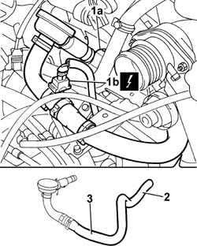

1080D22 OIL VAPOUR PIPE FROM CAM COVER TO INTAKE R R
- Path
- Procedures > 10 ENGINE UNIT > 1080 EXHAUST EMISSION CONTROL SYSTEM > 1080D CRANKCASE VAPOUR/GAS RECIRCULATION SYSTEM > 1080D22 OIL VAPOUR PIPE FROM CAM COVER TO INTAKE R R
- Kind
- repair procedure (removal / refitting; the operation number is the code)
- Applies to
- engines: 2.0 JTD 8V; all production periods
- Interactive page
- https://sloeber94.github.io/elrnDB-fDct/en/#/244000910
Applies to: engines: 2.0 JTD 8V; all production periods
 Removing
Removing
 Refitting
Refitting- Disconnect the negative battery terminal.
1. Press the retaining spring (1a) and disconnect the electrical connection (1b) for the engine oil vapour pipe.
 | Description | Connector |
|---|---|---|
1b | Oil vapour heating resistance | O007A |
2. Disconnect the engine oil vapour pipe from the air intake pipe between the filter and the turbocharger.
3. Remove the oil vapour pipe.

Applies to: engines: 2.0 JTD 8V; all production periods
Refitting
Removing- Fit the engine oil vapour pipe and connect it to the tappet cover and to the air intke pipe from the filter to the turbocharger.
- Connect the electrical connection for the engine oil vapour heating resistance.
| Description | Connector |
|---|---|---|
. | Oil vapour heating resistance | O007A |
- Connect the negative battery terminal.